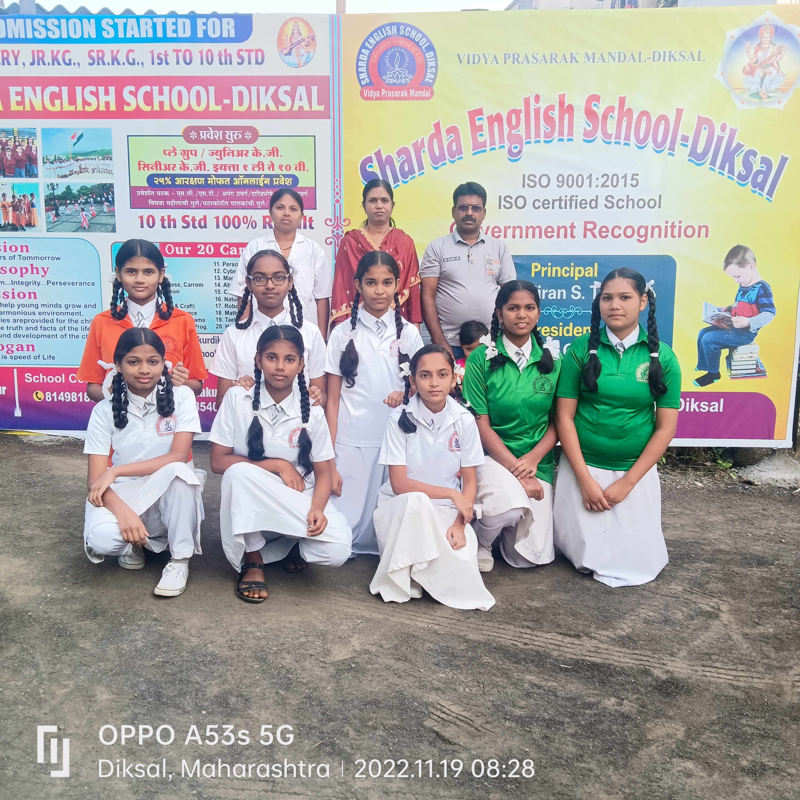
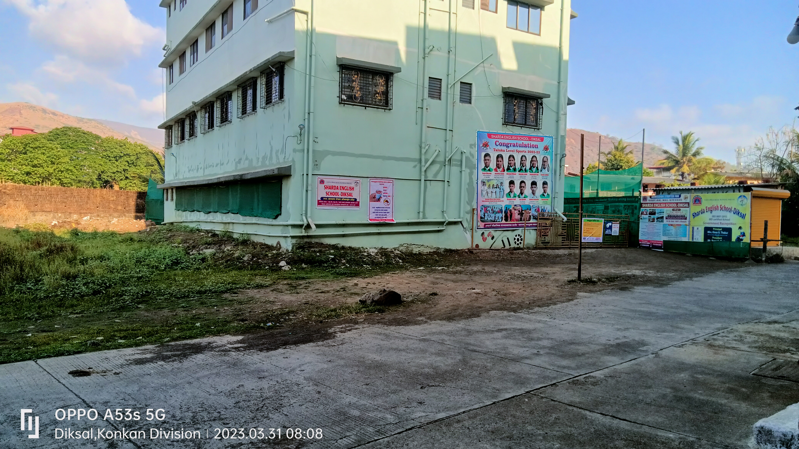
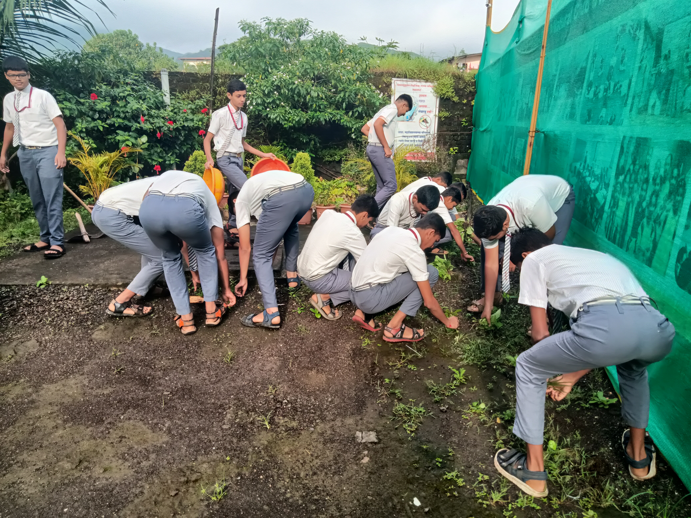
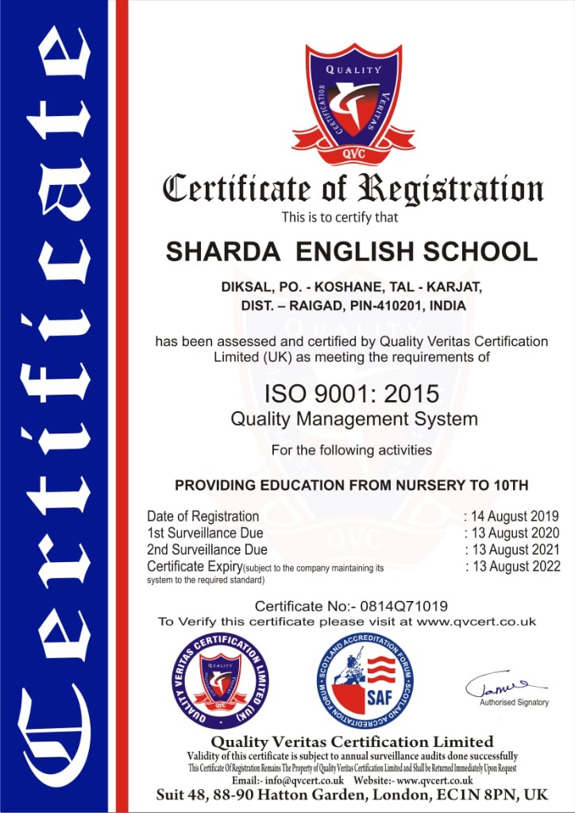

Home / About Us

Sharda English School, Diksal is a premier educational institution certified by ISO 9001:2015 Quality Management System. Managed by Vidya Prasarak Mandal, we are dedicated to providing quality education from Nursery to 10th Standard following the Maharashtra State Board (SSC) curriculum.
Address: Diksal, Po. - Koshane, Tal - Karjat, Dist. - Raigad, Pin-410201, India.
Established with the goal of providing quality education, Sharda English School focuses on strong academic foundations, moral values, and a supportive learning environment. With experienced teachers and a structured SSC curriculum, the school prepares students for academic success and responsible citizenship.

Dear Parents and Students,
I warmly welcome you to SCHOOL NAME, where we believe education is not only
about academic success but about shaping responsible and compassionate citizens.
Our school environment encourages curiosity, discipline, and excellence.

We are proud to be an ISO 9001:2015 certified institution for providing quality education from Nursery to 10th Standard.
